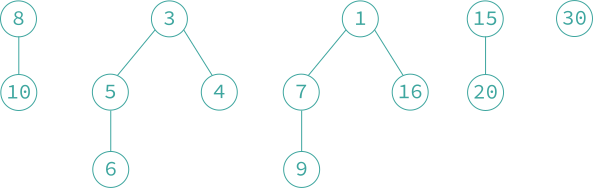

9.5 斐波那契堆
「斐波那契堆 Fibonacci heap」 是一种数据结构，除了支持二项堆的插入、删除最小（大）元素和合并三种操作以外，还支持下列新操作：
- 「删除操作 delete」，删除指定结点的元素。分摊时间复杂度为 。
- 「关键字减值操作 decrease key」，将指定结点的关键字值减去一个正数值。分摊时间复杂度为 。
「最小斐波那契堆 min-Fibonacci heap」 是最小树的集合，「最大斐波那契堆 max-Fibonacci heap」 是最大堆的集合。
- 斐波那契堆简称 F 堆，B 堆是 F 堆的一种特殊情况。F 堆的存储表示在 B 堆的基础上增加两个域：
parent域和child_cut域。其中parent域用于指向该结点的父结点（如果该结点有父结点），而child_cut域的含义在下面「级联剪枝操作」中进行介绍。插入、删除最小（大）元素和合并这三个基本操作的实现与 B 堆上相应的操作完全相同。 - 『删除操作』 为了从 F 堆上删除任意一个结点 ，执行如下操作步骤：
- 若 ，则执行删除最小元素操作；否则执行 2-4 步；
- 将 从其所在的双向链表中删除；
- 将 儿子结点形成的双向链表与 所指向的根结点形成的双向链表合并，形成一个新的根结点双向链表。与删除最小元素不同的是，此处不连接相同度的树；
- 释放结点 。

原 F 堆

原 F 堆删除 12 后的 F 堆
- 『关键字减值操作』 为了减小结点 中的关键字值，执行以下操作步骤：
- 减小结点 中的关键字值；
- 如果结点 不是最小树的根结点，且关键字值小于其父结点关键字值，那么，将 从其所在的双向链表中删除，并将其插入到由最小树根结点形成的双向链表中；
- 若结点 的关键字值小于结点 的关键字值，将 指向 。

原 F 堆关键字 15 减 4 后的 F 堆
- 『级联剪枝操作』